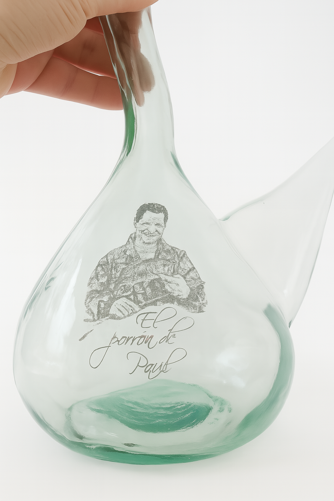
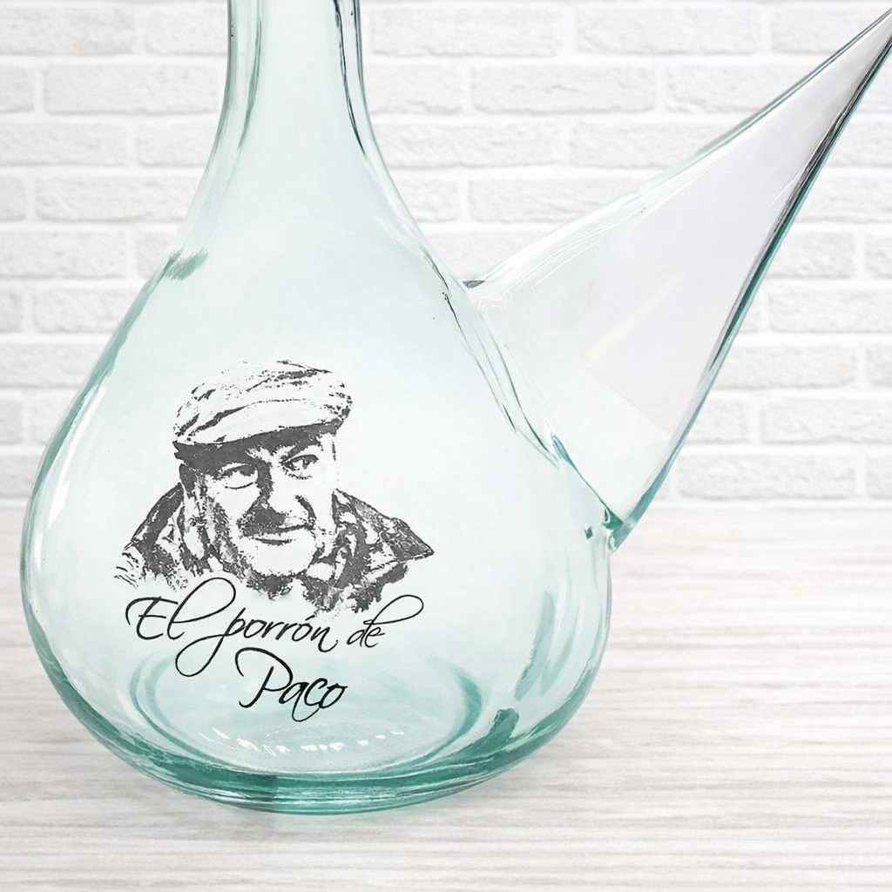
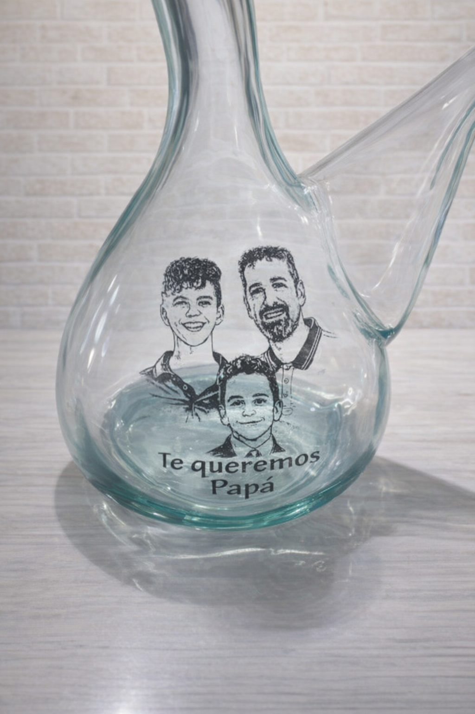
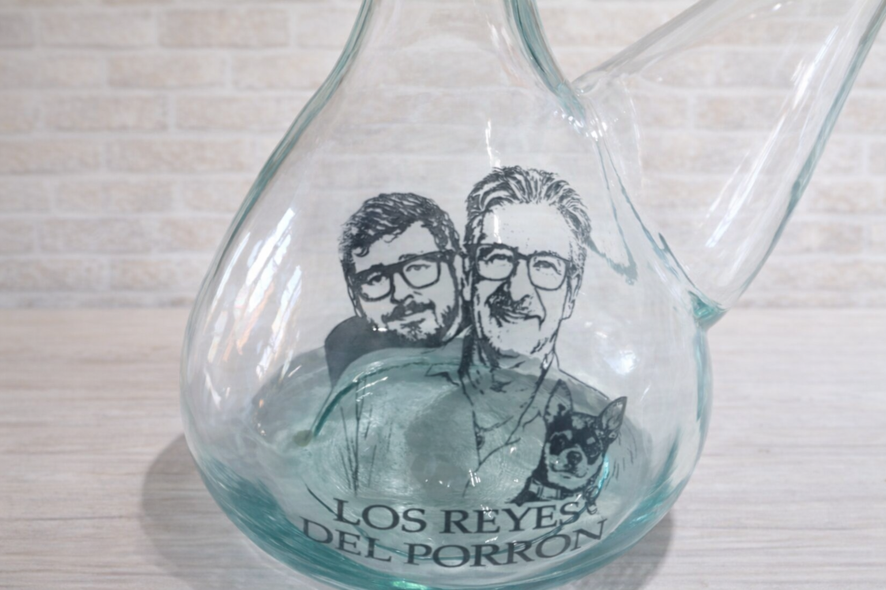

Cómo usar un porrón - guía para principiantes
¿Primera vez con un porrón? Consulta nuestra guía paso a paso...
Descubre el vaso mágico para vino de Cataluña. ¡Ahora con personalización de tu foto!
Donde conseguir
El porrón es un vaso tradicional español para beber vino, originario de Cataluña. Su forma característica - jarra con cuello estrecho y pitorro especial - permite beber vino sin tocar el vaso con los labios.
¡No es solo una forma de beber vino, es una experiencia! El porrón une a la gente en la mesa y crea momentos inolvidables.

¡Crea un regalo único! Transformamos tu foto en un dibujo lineal y lo aplicamos al porrón.
Convertimos tu foto en un dibujo artístico
Para cumpleaños, aniversarios, bodas o sin ocasión
Vaso auténtico de Cataluña
Mira nuestras realizaciones



¿Primera vez con un porrón? Consulta nuestra guía paso a paso...
Descubre la fascinante historia de este vaso único...
¿Buscas un regalo original para un amante del vino?...
Un porrón estándar contiene aproximadamente 1L, es decir, una botella de vino.
Requiere un poco de práctica, ¡pero nuestra guía te ayudará a dominar el arte de beber con porrón!
Desde el pedido hasta el envío - aproximadamente 5-7 días laborables.